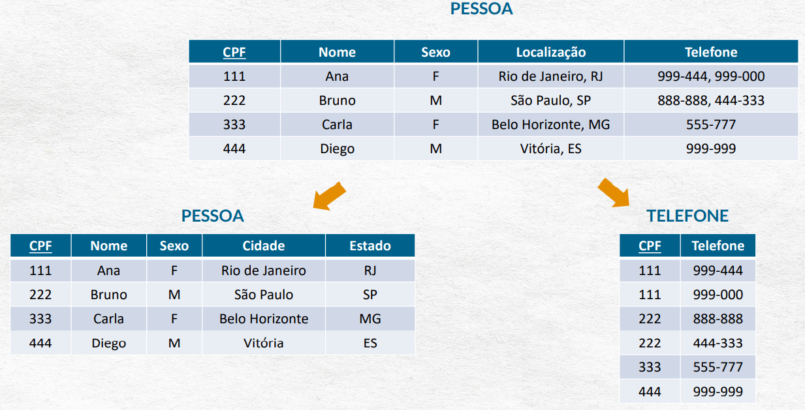

A normalização é um princípio crucial para organizar e estruturar bancos de dados relacionais. Ela ajuda a eliminar redundâncias, reduzir inconsistências e garantir a integridade dos dados.
1. Qual é a importância da normalização para a integridade dos dados em bancos relacionais?
A normalização é essencial para garantir a integridade dos dados em bancos de dados relacionais. Ela evita:
Redundância: Reduz a duplicação de dados, o que minimiza o espaço de armazenamento.
Anomalias de atualização: Corrige inconsistências que podem surgir durante operações de inserção, atualização ou exclusão.
Consistência: Garante que os dados sigam regras bem definidas, evitando valores inválidos ou discrepantes.
Assim, a normalização proporciona uma base sólida para consultas precisas e facilita a manutenção do banco de dados.
2. Explique as características da Primeira e Segunda Formas Normais (1FN e 2FN) e como identificá-las.
Primeira Forma Normal (1FN):
Característica: Requer que todos os atributos tenham valores atômicos (não divisíveis) e que não existam grupos repetidos.
Identificação: Verifique se há campos que armazenam múltiplos valores ou listas. Se sim, esses dados devem ser decompostos em tabelas separadas.
Impacto: Elimina grupos repetitivos, resultando em tabelas mais simples e organizadas, facilitando consultas e operações.

Segunda Forma Normal (2FN):
Característica: Além de atender à 1FN, exige que todos os atributos não-chave sejam completamente dependentes da chave primária inteira.
Identificação: Em tabelas com chaves primárias compostas, verifique se algum atributo não-chave depende apenas de parte da chave primária. Esses atributos devem ser movidos para uma nova tabela.
Impacto: Elimina dependências parciais, resultando em menos redundância e maior integridade.
A 1FN e 2FN ajudam a estruturar os dados, dividindo informações relacionadas em tabelas distintas, o que melhora a organização e facilita futuras expansões.
3. Quais são os principais desafios na implementação da BCNF e 4FN?
Forma Normal de Boyce-Codd (BCNF):
Desafio: Nem sempre é possível alcançá-la sem perder dependências funcionais importantes. Isso pode levar à necessidade de compromissos que impactem negativamente o desempenho.
Aplicabilidade: É útil em casos onde há dependências complexas entre atributos não-chave e múltiplas chaves candidatas.
Quarta Forma Normal (4FN):
Desafio: Identificar e remover dependências multivaloradas não-triviais pode ser complexo, especialmente em bancos de dados com relacionamentos sofisticados.
Aplicabilidade: Essencial em cenários onde um atributo pode ter múltiplos valores independentes, como em sistemas de gerenciamento de bibliotecas, onde livros podem ter múltiplos autores e assuntos.
4. Descreva uma situação prática onde a 5FN seria necessária.
Imagine um sistema de alocação de funcionários a projetos com diferentes cargos. Temos três tabelas:
Projeto-Funcionário: Relaciona funcionários aos projetos em que estão alocados.
Projeto-Cargo: Define os cargos disponíveis para cada projeto.
Funcionário-Cargo: Relaciona funcionários aos cargos que podem ocupar.
5. Como 1FN, 2FN e 3FN influenciam a estrutura e eficiência de um banco de dados?
1FN: Simplifica a estrutura do banco ao eliminar valores compostos e repetitivos. Facilita consultas e atualizações, mas pode levar ao aumento no número de tabelas.
2FN: Remove dependências parciais, tornando a estrutura mais modular. Isso diminui redundâncias, mas pode aumentar a complexidade das consultas, exigindo mais junções.
3FN: Elimina dependências transitivas, assegurando que cada tabela armazene apenas informações diretamente relacionadas à sua chave primária. Aumenta a consistência e reduz a redundância.
Cenários: Pequenos sistemas podem se beneficiar menos de uma normalização completa, priorizando o desempenho com menos tabelas. Já sistemas grandes requerem normalização até a 3FN para garantir consistência e escalabilidade, embora a desnormalização seja útil em casos específicos.